公式PV
実際のプレイの様子
→ 横にスクロールできます
毎日たのしい、あたらしい遊び。
パズルだけじゃない。あなたの街と、全国とつながる。
🔮 街占い
あなたの「推しの街」の今日の運勢と、全国順位を毎日占える。仕事・恋愛・金・健康・学業の5項目に、今日の日本一も発表。公式Xで毎朝の1位も公開中。
💬 みんなの声NEW
全国のプレイヤーと「地域紹介・応援・お祝い」のコメントを送り合える。パズル中は応援が画面に流れ、クリアするとお祝いが届く。あなたの街の魅力をひとことで紹介しよう。
よこ画面にも対応
タイトルからパズル・クイズ・占いまで、すべての画面がよこ向きに対応。タブレットや大きな画面でも快適に遊べます（ゲームパッドにも対応）。→ 横にスクロールできます
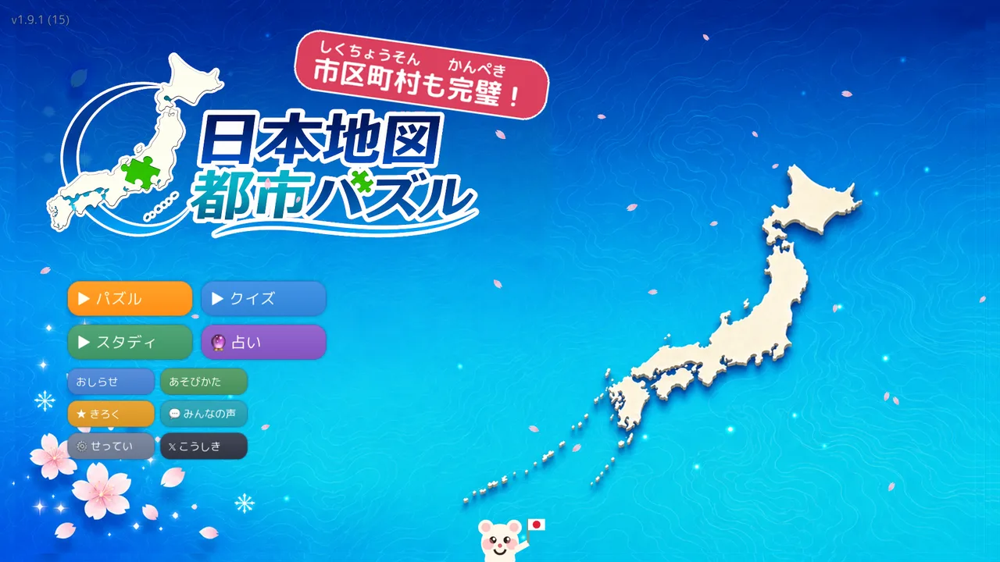
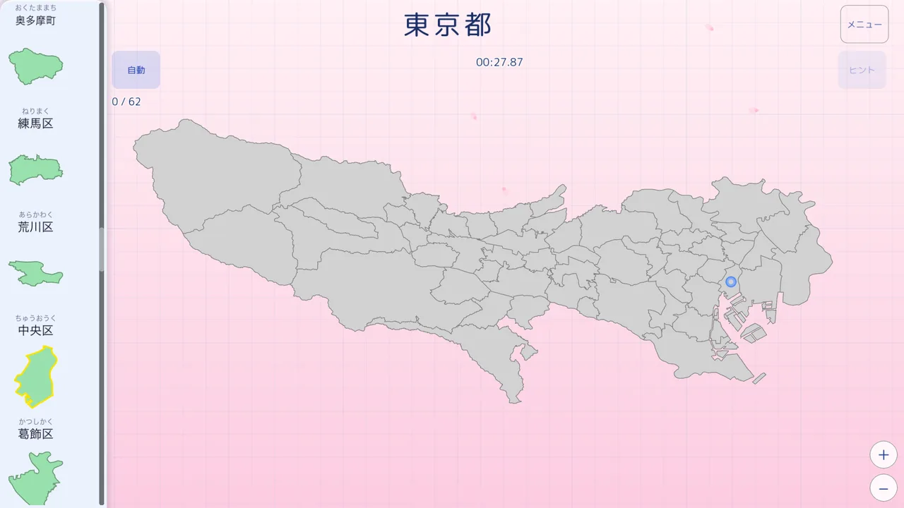
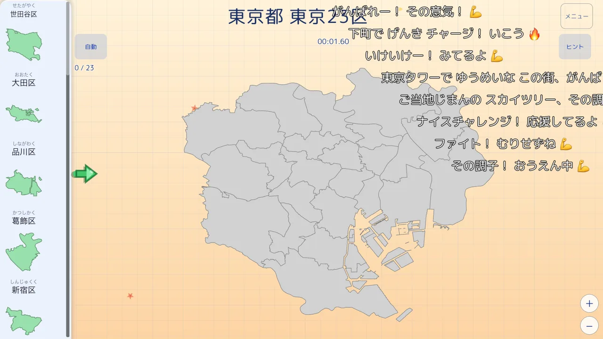
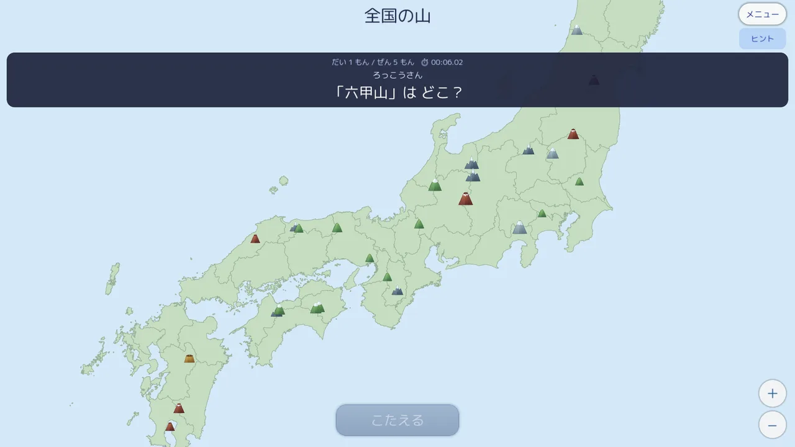
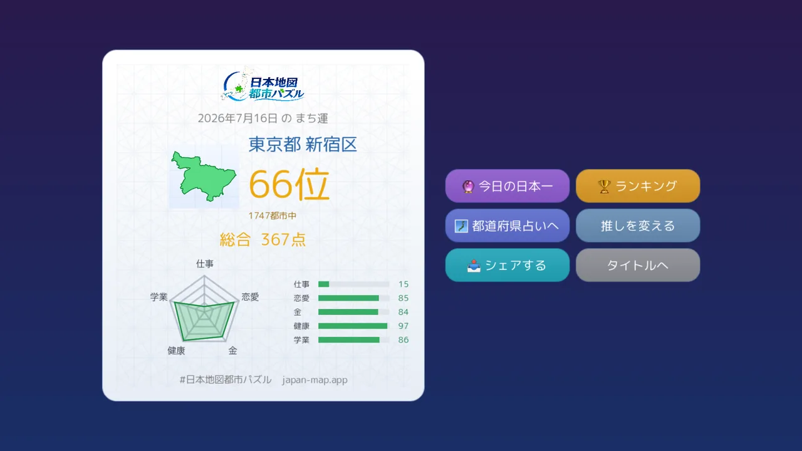
日本全国、すべての街が遊べる。
47都道府県も、1,746の市区町村も。
あなたの街が、まるごとパズルになる。
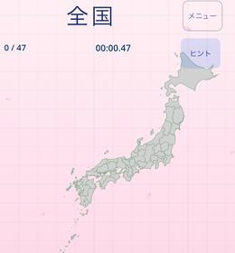
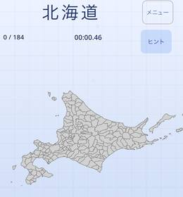
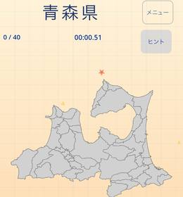
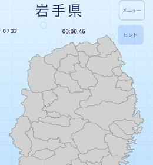
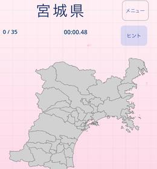
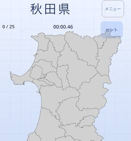
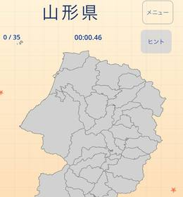
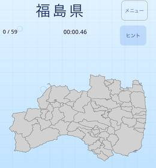
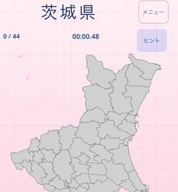
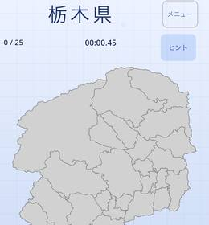
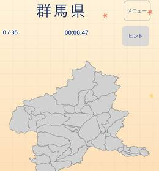
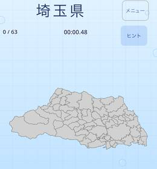
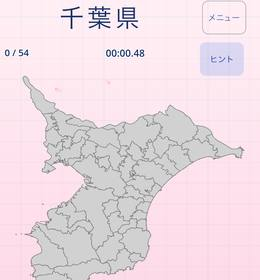
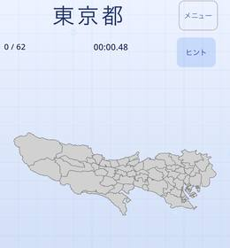
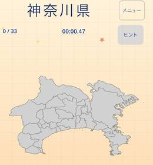
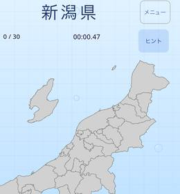
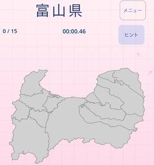
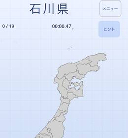
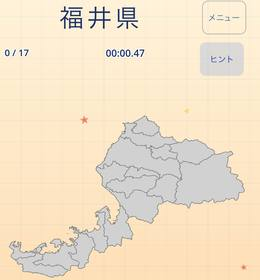
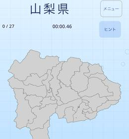
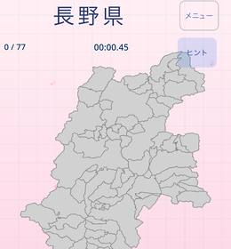
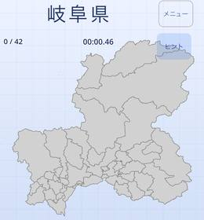
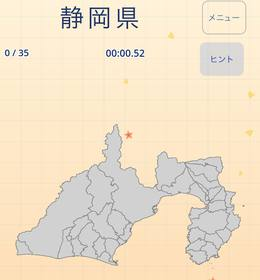
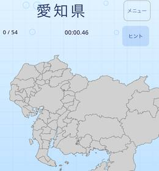
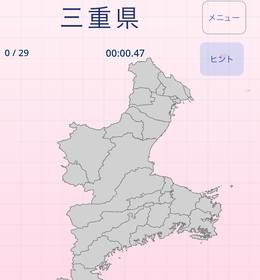
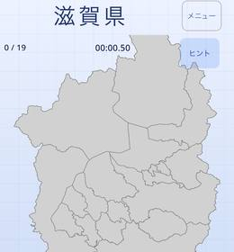
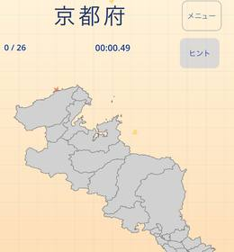
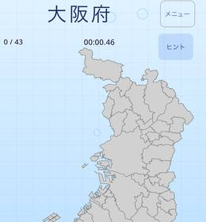
↑ 全国＋47都道府県＋政令市の区。さらに市区町村それぞれも1つずつ遊べます（山・川モードも別途収録）。
充実の機能
遊びごたえも、学びやすさも。
- 市区町村ぜんぶ
全国どの街も、それぞれがひとつのパズル。 - 政令指定都市の区まで
大都市は区の単位でこまかく遊べる。 - 山・川モード
日本の名峰・有名な河川も遊べる。 - 共通ランキング
iOS・Android合同で全国のプレイヤーとタイムを競える。 - クラウドで記録復元
機種変・再インストールでも進捗そのまま。 - 自動モード
むずかしい時はおまかせ。見ているだけでも楽しい。 - シェアカード・称号
クリアの記録をカードにして共有。集める楽しみも。 - 全コース、無料で遊べる
全国から町丁目まで、ぜんぶ無料。買い切りのフル版で広告なし＆「みんなの声」への投稿も。
スクリーンショット
→ 横にスクロールできます
こんな方に
📚 小学生の地理学習に・中学受験対策に
👨👩👧 親子でいっしょに、日本地図で盛り上がる
🗾 大人の学び直し・ご当地ファンにも
全コース無料で遊べる／買い切りのフル版で広告なし・「みんなの声」への投稿も
よくある質問
「日本地図 都市パズル」はどんなアプリ？
日本全国の都道府県・市区町村を並べて覚える地理パズルアプリです。日本全国から市区町村、山・川モードまで、遊びながら日本地図が身につきます。
無料で遊べますか？
はい。全コース無料で遊べます。買い切りのフル版で広告が消え、「みんなの声」への投稿もできます。
市区町村はどこまで収録していますか？
全国1,746の市区町村すべてを収録しています。政令指定都市は「区」の単位まで細かく遊べます。
都道府県や日本全国のパズルもありますか？
あります。日本全国（47都道府県）のパズルから、各都道府県内の市区町村パズルまで段階的に楽しめます。
山や川のパズルもありますか？
はい。日本の名峰・有名な河川を並べる「山モード・川モード」も収録しています。
子どもの地理学習や中学受験に使えますか？
遊びながら都道府県・市区町村の位置と名前が覚えられるので、小学生の地理学習や中学受験の対策にもおすすめです。ふりがな付きでお子さまでも安心です。
iPhoneとAndroidどちらでも遊べますか？
どちらでも遊べます。App Store / Google Play で「日本地図 都市パズル」と検索してください。記録はクラウドで復元でき、共通ランキングにも参加できます。
「街占い」「みんなの声」とは？
「街占い」は推しの街の今日の運勢と全国順位を毎日占える機能、「みんなの声」は全国のプレイヤーと応援・お祝い・地域紹介コメントを送り合える機能です。
公式SNSで最新情報を
今日の日本一・新機能・激ムズプレイ動画を毎日配信中！フォローしてね。